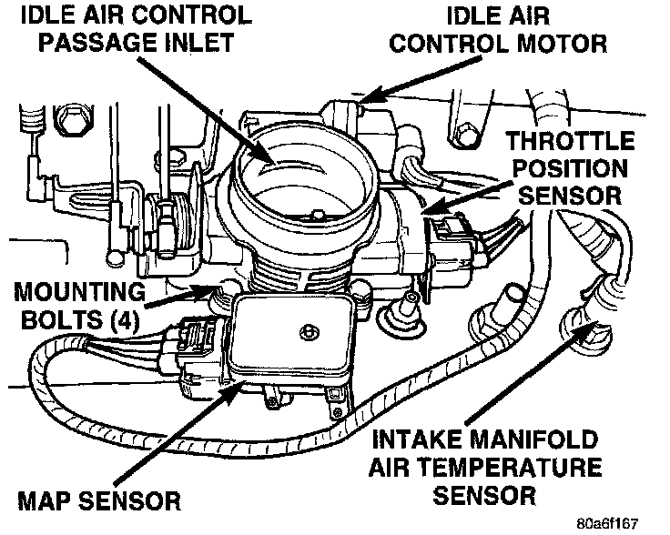
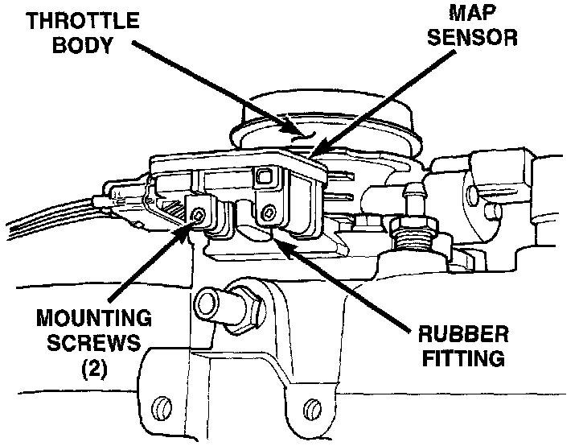
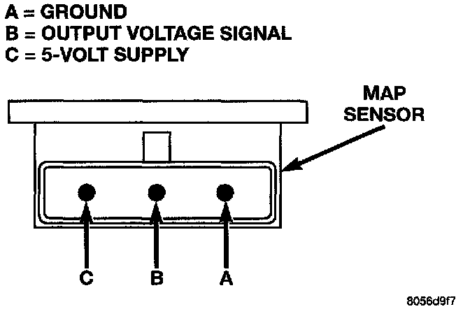

Barometric Pressure Sensor: Testing and Inspection
MANIFOLD ABSOLUTE PRESSURE (MAP) SENSOR TESTFig. 50 Sensor Locations:

To perform a complete test of Manifold Absolute Pressure (MAP) sensor (Fig. 50) and its circuitry, refer to Powertrain Management/Computers and Control Systems/Testing and Inspection.
Testing and Inspection
To test the MAP sensor only, refer to the following:
Fig. 51 L-Shaped Rubber Fitting, MAP To Throttle Body:

1. Inspect the rubber L-shaped fitting from the MAP sensor to the throttle body (Fig. 51). Repair as necessary.
CAUTION: When testing the MAP sensor, be sure that the harness wires are not damaged by the test meter probes.
Fig. 49 MAP Sensor Connector Terminal - Typical:

2. Test the MAP sensor output voltage at the MAP sensor connector between terminals A and B (Fig. 49). With the ignition switch ON and the engine OFF, output voltage should be 4 to 5 volts. The voltage should drop to 1.5 to 2.1 volts with a hot, neutral idle speed condition.
3. Test powertrain control module (PCM) cavity A-27 for the same voltage described above to verify the wire harness condition. Repair as necessary.
4. Test MAP sensor supply voltage at sensor connector between terminals A and C (Fig. 49) with the ignition ON. The voltage should be approximately 5 volts (+/- 0.5V). Five volts (+/- 0.5V) should also be at cavity A-17 of the PCM wire harness connector. Repair or replace the wire harness as necessary
5. Test the MAP sensor ground circuit at sensor connector terminal-A (Fig. 49) and PCM connector A-4. Repair the wire harness if necessary.